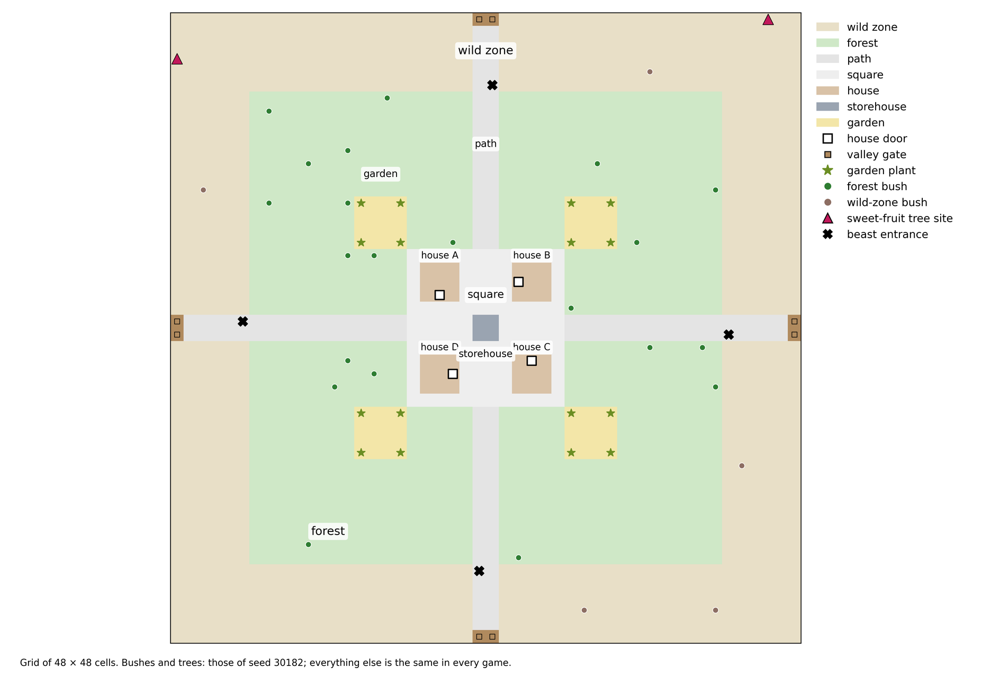
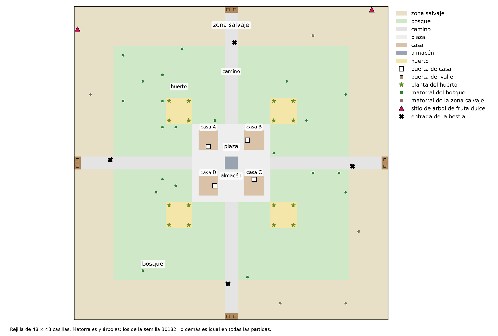

G-EMV: Emotion and Reason in an Agent. A Body That Lives in the Present: A Creature, Its Sister and a ValleyG-EMV: emoción y razón en un agente. Un cuerpo que vive el presente: una criatura, su hermana y un valle
Independent researcher, BarcelonaInvestigador independiente, Barcelona
This work presents an artificial creature that lives in the present, and asks what kind of life it leads on its own. It feels what it loses and what it gains in three dimensions at once, the body, resources and its bonds with the others, and it seeks its equilibrium in all three: it imagines a short while ahead and decides no further than that. There is no reward and no training. It has no reasoning part and almost no curiosity. We put it with seven others in a small world where they have to survive and live together, because they can die there. That world is a valley made for the creature, the same for every player.
Este trabajo presenta una criatura artificial que vive el presente, y pregunta qué vida hace sola. Siente lo que pierde y lo que gana en tres dimensiones a la vez, el cuerpo, los recursos y los vínculos con las otras, y busca su equilibrio en las tres: imagina un rato y decide para ese rato. No hay recompensa ni entrenamiento, no tiene razón y casi no tiene curiosidad. La ponemos con otras siete en un mundo pequeño donde hay que sobrevivir y convivir, porque en él se puede morir. El mundo es un valle hecho para ella, y es el mismo para todos los jugadores.
What can be felt in the moment comes to it without anyone telling it: it gathers with the others in the face of danger, kills none of them, looks after its sister and the hungry, and goes home to sleep. In hard worlds it outlives a player that follows simple rules. When it loses its sister it becomes restless, calls and seeks out its neighbors. We wrote the grief ourselves, and that company relieves it; the restlessness and the calls we did not.
Lo que se nota en el momento le sale sin que nadie se lo diga: se junta ante el peligro, no mata a ninguna de las otras, cuida de su hermana y de quien pasa hambre, y vuelve a casa a dormir. Cuando el mundo aprieta vive más que un jugador de reglas simples. Cuando pierde a su hermana anda inquieta, llama y busca a las vecinas. El duelo lo escribimos nosotros, y también que la compañía lo alivia; la inquietud y las llamadas, no.
What requires looking far ahead it does not manage: it does not store for later or go for what is far away. The valley is played in 5 variants, which we call worlds. In the hardest one, where food runs short twice for 5 days in a row, about 4 of the 8 reach the end alive: they starve even though the valley gave more than enough earlier. Two senseless habits it had were fixed by changing what it can see, not a number. Once fixed it lives better, but in that world it does not live longer, and there one of our bets failed.
Lo que pide mirar lejos no le sale: no guarda para después ni va a por lo que está lejos. El valle se juega en cinco variantes, que llamamos mundos. En la más dura, donde la comida escasea dos veces durante cinco días seguidos, de las ocho llegan vivas al final unas cuatro: mueren de hambre aunque el valle haya dado de sobra antes. Dos costumbres sin sentido que tenía se arreglaron cambiando lo que puede ver, no un número. Arreglada vive mejor, pero en ese mundo no vive más, y ahí falló una de nuestras apuestas.
Finally we compare three creatures that feel the same and differ only in how they combine what they feel to decide: by adding it up, by how far each dimension is from its target, or with the engine. They get almost equally far. The engine creature pushes less and lives a little longer than the one that adds. If being well means that nothing is going badly in any of the three dimensions, its village is well more of the time. If it means the sum of the three, where one good thing covers a bad one, the two cannot be told apart. We do not see that it obtains more: it spreads it better.
Por último comparamos tres criaturas que sienten lo mismo y solo se diferencian en cómo juntan lo que sienten para decidir: sumándolo, mirando lo lejos que queda cada dimensión de su meta, o con el motor. Llegan casi igual de lejos. La del motor se empuja menos y vive un poco más que la que suma. Si estar bien es que no le vaya mal en ninguna de las tres dimensiones, su aldea está bien más tiempo. Si es la suma de las tres, donde una cosa buena tapa una mala, las dos no se distinguen. No vemos que consiga más: lo reparte mejor.
Everything was measured in one valley, with 114 bets written before playing, of which 90 proved right. The valley is published whole; later works rest on it and this creature.
Todo se midió en un solo valle, con 114 apuestas escritas antes de jugar, de las que se cumplieron 90. El valle se publica entero, y sobre él y sobre esta criatura se apoyan los trabajos que siguen.


Figure 2.1. The valley. In the center, the square with the 4 houses and the storehouse. At the 4 corners of the square, on the outside, the 4 gardens, each with its 4 plants. Around them, the forest with its bushes, and at the edge, the wild zone, where the bushes that give double are and the places where the sweet-fruit tree appears. The crosses mark where the beast comes in. The bushes are those of one game; everything else is the same in all of them.
Figura 2.1. El valle. En el centro, la plaza con las cuatro casas y el almacén. En las cuatro esquinas de la plaza, por fuera, los cuatro huertos, cada uno con sus cuatro plantas. Alrededor, el bosque con sus matorrales, y en el borde, la zona salvaje, donde están los matorrales que dan el doble y los sitios donde aparece el árbol de fruta dulce. Las cruces marcan por dónde entra la bestia. Los matorrales son los de una partida; lo demás es igual en todas.
PaperArtículoCodeCódigoLeer en español (PDF)
Paper eight: fifth part of the series on emotion and reason in an agent. Concept DOI (all versions): 10.5281/zenodo.24579959. Code, reports and data: github.com/Manelenrico/g-emv/paper8.
Trabajo ocho: quinta parte de la serie sobre emoción y razón en un agente. DOI de concepto (todas las versiones): 10.5281/zenodo.24579959. Código, informes y datos: github.com/Manelenrico/g-emv/paper8.